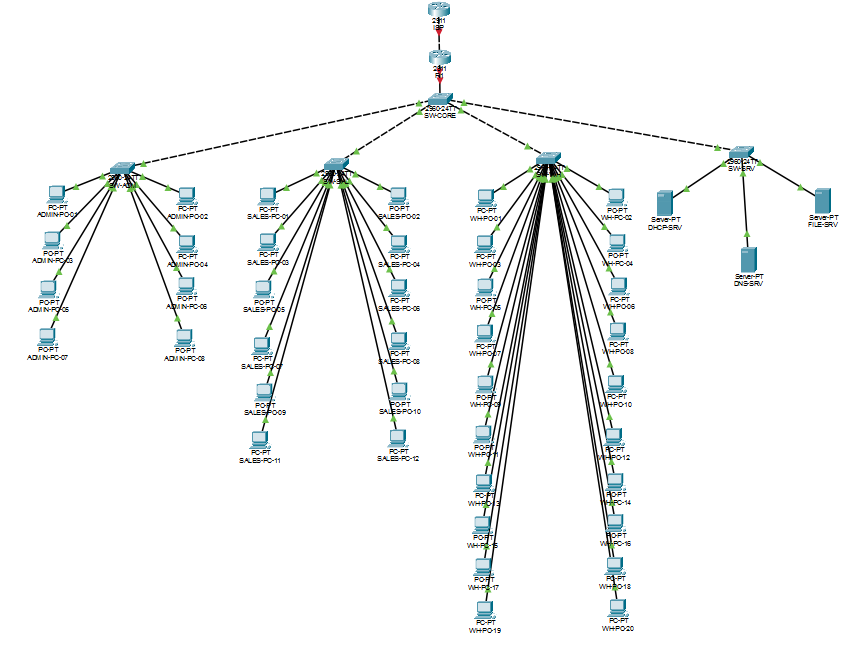
Every result in this report comes from the running Packet Tracer network: a screenshot or a pasted command output. Where something is a design proposal that was not built or simulated (the branch-office design in Section 6.2, the fault catalogue in Section 5.9), it is labelled as a proposal. Where a result was less clean than it could have been, the report says so (Sections 4.2 and 7).
Tshimo Agri Supplies, an agricultural supplier in Potchefstroom, needs a head-office network: separated departments, internal DHCP, DNS and file services, and internet access over one ISP link, inside the assigned block 10.23.0.0/16. A branch office may open within 18 months and Change Request CR1 adds eight staff to one department; neither may force a redesign. The assigned challenge is Network Troubleshooting — fault isolation, Advanced.
One edge router (R1) does router-on-a-stick inter-VLAN routing, DHCP relay and NAT/PAT. One Layer 2 core switch trunks R1 to four access switches, one per department. Four business VLANs, each a uniform /26 (62 usable hosts) whatever the current headcount, plus management/native VLAN 99. All of HQ sits inside 10.23.0.0/23, one summarisable block, and 10.23.128.0/17 is reserved untouched for the branch.
show interfaces trunk isolated it; a one-line fix and repeat tests verified recovery.| Final deliverable | Delivered as | Location |
|---|---|---|
| Packet Tracer project (.pkt) | Complete HQ network, repaired and healthy | GitHub packet-tracer/ and submissions/final/; link in the eFundi text |
| GitHub portfolio of evidence | Docs, configs, 20 screenshots, test log, fault record, three frozen packages | github.com/MALULEKE-KS/tshimo-agri-network |
| Technical report | This document | Final_TechnicalReport_Maluleke_48277444.pdf |
| 15–20 minute inset video | Recorded walkthrough and live demonstration | Link in the eFundi text (not in the repository) |
| Item | Value |
|---|---|
| Client | Tshimo Agri Supplies, Potchefstroom — agriculture industry (Client ID CLI-042) |
| Assigned address block | 10.23.0.0/16 |
| Assigned challenge | Network Troubleshooting — fault isolation scenario, Advanced difficulty |
| Branch office | May open within 18 months; the addressing plan must allow it without redesigning HQ |
| Change Request CR1 | Eight additional staff in one department; capacity must be added without redesigning the network |
The brief does not describe Tshimo Agri Supplies' departments or headcount. The structure below was assumed at Milestone 1 for a small-to-medium agri-supply distributor, and everything after it (VLANs, subnets, port counts, DHCP pools) was derived from it. It is an assumption, not a client fact; a different real headcount would change the numbers but not the method.
| Department | Headcount | Rationale for the assumption |
|---|---|---|
| Admin / Management | 8 | Small office function: owner, finance, HR |
| Sales | 12 | Client-facing and order-desk staff |
| Warehouse / Logistics | 12 → 20 (CR1) | Largest department: stock handling, dispatch, delivery; the department CR1 grows, as the most plausible place for an agri distributor to add headcount |
| Servers | 3 | DHCP, DNS, and file/web services hosted on-premises |
| # | Requirement | How the design meets it | Evidence |
|---|---|---|---|
| R1 | Department segmentation | One VLAN and one /26 per department; inter-VLAN traffic must pass through R1 | Sections 3.2, 4 · Fig 4, 11 |
| R2 | Growth headroom (CR1) | Every VLAN is a /26 with 62 usable hosts; 24-port access switches. Warehouse went from 12 to 20 with no subnet change | Section 6.1 · Fig 4 |
| R3 | Branch office without redesign | 10.23.128.0/17 reserved and unused; HQ summarises as 10.23.0.0/23 | Sections 2.3, 6.2 · Fig 1 |
| R4 | Internet through one ISP link | Default route to the ISP; NAT/PAT overload on R1's WAN address | Section 3.3 · Fig 6, 10 |
| R5 | Internal DHCP, DNS, file services | Three Server-PT servers in VLAN 40; DHCP relayed by R1; DNS A record; HTTP and FTP | Section 3.4 · Fig 7, 8 |
| R6 | Support an Advanced troubleshooting exercise | Multiple VLANs, trunks and a routed uplink give a real fault space; the VLAN-pruning fault was injected and isolated | Section 5 · Fig 12–16 |
Each major decision, what else was possible, and why this option won for a client of this size.
| Decision | Alternative | Why this option | Trade-off accepted |
|---|---|---|---|
| Router-on-a-stick on R1 | Layer 3 switch with SVIs | All routing, DHCP relay and NAT sit in one device, which keeps the fault space small and the isolation method clear. It is also the technique the course emphasises, and a 2960 is Layer 2 only. | One 1 Gbps trunk carries all inter-VLAN traffic; ample for 43 hosts |
| One Layer 2 core switch | Redundant dual-core | Fewer hops to reason about; matches the client's size | SW-CORE and R1 are single points of failure (Section 8) |
| One access switch per department | One large switch with port-based VLANs | Physical separation mirrors the logical one; 24-port switches give port headroom for CR1 | Four switches to manage instead of one |
| Dedicated DHCP server in VLAN 40, relayed by R1 | DHCP pools on R1 itself | Central, GUI-managed pools; a server VLAN is where a business would host it; demonstrates relay (ip helper-address) | New leases depend on VLAN 40, the relay and the server all being up |
| Static addresses for servers | DHCP reservations | Servers must be at predictable addresses (DNS and DHCP clients point at them) | Manual change if a server is re-addressed |
| NAT/PAT overload to R1's WAN address | Static or pooled NAT | The client has no public allocation, so every host shares one address, told apart by port | No inbound connections without extra port-forwarding |
| Native VLAN 99, never VLAN 1 | Default native VLAN 1 | Keeps untagged traffic out of the default VLAN; a native mismatch also logs loudly, which helps troubleshooting | Native VLAN must be set on both ends of every trunk |
| Static 802.1Q trunks, explicit allowed list | Auto-negotiated, all VLANs allowed | Predictable behaviour; only the five VLANs the design uses may cross a trunk. This is also what makes the assigned fault possible | A wrong list silently drops a VLAN (the assigned fault) |
A /26 leaves 6 host bits: 26 = 64 addresses, minus the network and broadcast addresses = 62 usable hosts. Each business VLAN gets one, whatever its headcount today:
| VLAN | Subnet | Usable range | Devices now | Used of 62 | Free |
|---|---|---|---|---|---|
| 10 ADMIN | 10.23.0.0/26 | .1 – .62 | 8 PCs | 13% | 54 |
| 20 SALES | 10.23.0.64/26 | .65 – .126 | 12 PCs | 19% | 50 |
| 30 WAREHOUSE | 10.23.0.128/26 | .129 – .190 | 20 PCs (12 + 8 CR1) | 32% | 42 |
| 40 SERVERS | 10.23.0.192/26 | .193 – .254 | 3 servers | 5% | 59 |
| 99 MGMT-NATIVE | 10.23.1.16/28 | .17 – .30 | gateway + 5 switch SVIs | 43% of 14 | 8 |
Usable ranges include the R1 gateway address (the first usable address of each subnet); "Free" subtracts the gateway and devices. Why uniform and over-sized? A /27 (30 hosts) would also have covered CR1's 20 Warehouse staff, but would leave only 10 spare, so the next growth step would force a re-address. The four business /26s together use 256 addresses, 0.4% of the /16; the whole HQ footprint, 10.23.0.0/23, is 512 addresses, 0.78%. Over-provisioning costs almost nothing here, and one uniform rule (every department gets a /26) is easier to operate and to explain than four custom sizes. A real limit to note: the DHCP pools lease 50 addresses, so the first ceiling Warehouse would hit is the pool (raisable to 53 from its current start of .138) rather than the subnet.
/16. HQ's business VLANs and infrastructure occupy two contiguous /24s, so they summarise as one 10.23.0.0/23 route. The upper half of the /16 is held back for the branch.Why the summary works. 10.23.0.0/24 and 10.23.1.0/24 differ only in the last bit of the third octet, so the first 23 bits are identical and one /23 covers both. Any future router upstream of HQ needs one route, not nine. Why a whole /17 for the branch? The brief gives no branch headcount or structure, so rather than invent one, the plan fixes what is known (HQ) and holds back half the allocation, untouched, until the branch's real requirements exist.
The design was built in Cisco Packet Tracer 9.0.1. Every device configuration was written as a reviewable command file first, applied one device at a time, and checked with a show command before moving on. The full command sets are in the Appendix.
| Device | Model | Role |
|---|---|---|
| ISP, R1 | Cisco 2911 | ISP: simulated provider with loopback 203.0.113.1 as the "internet" target. R1: edge router (routing, relay, NAT) |
| SW-CORE | Cisco 2960-24TT | Layer 2 distribution; trunks R1 to all four access switches |
| SW-ADM / SAL / WH / SRV | Cisco 2960-24TT | One access switch per department; 24 ports each for physical headroom |
| 40 PCs, 3 servers | PC-PT, Server-PT | 8 Admin, 12 Sales, 20 Warehouse (12 + 8 CR1); DHCP-SRV, DNS-SRV, FILE-SRV |
| Link | Ports | Cable | Role |
|---|---|---|---|
| ISP ↔ R1 | ISP Gi0/0 ↔ R1 Gi0/1 | Crossover | Routed WAN 10.23.1.0/30 |
| R1 ↔ SW-CORE | R1 Gi0/0 ↔ SW-CORE Gi0/1 | Straight-through | 802.1Q trunk |
| SW-CORE ↔ access | Fa0/1→SW-ADM, Fa0/2→SW-SAL, Fa0/3→SW-WH, Fa0/4→SW-SRV (each to Fa0/1) | Crossover | 802.1Q trunks |
| Access ↔ endpoints | Fa0/2 upward | Straight-through | Access ports |
Cabling follows the standard rule: straight-through between unlike devices, crossover between like devices. The 2911 and 2960 would usually bring a wrong cable up through Auto-MDIX, but the build uses the textbook-correct cable so it does not rely on that.
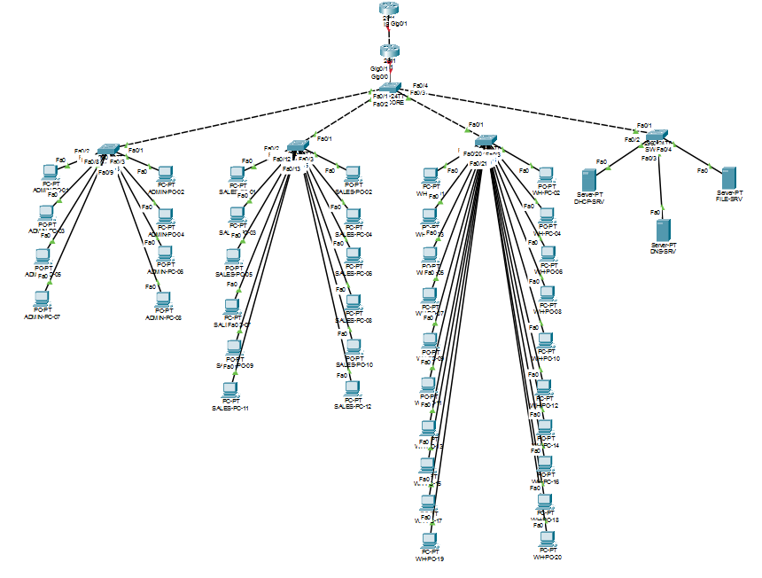
switchport mode trunk) with native VLAN 99 and an explicit allowed list of 10,20,30,40,99..18, SW-ADM .19, SW-SAL .20, SW-WH .21, SW-SRV .22 (all /28) — with default gateway 10.23.1.17.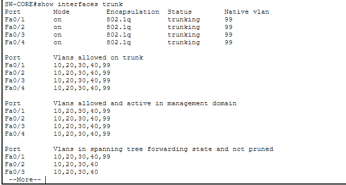
show interfaces trunk: Fa0/1–Fa0/4 trunking, 802.1Q, native VLAN 99, allowed 10,20,30,40,99. (Gi0/1 to R1 had not yet come up when this was captured, because R1 was configured afterwards.)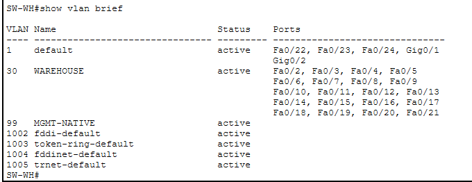
show vlan brief: VLAN 30 WAREHOUSE holds exactly 20 access ports, Fa0/2–Fa0/21 — the 12 original Warehouse staff plus the 8 from CR1.The switches are Layer 2 only, so R1 is the one place traffic moves between VLANs. Its Gi0/0 carries no IP address; instead it has one 802.1Q subinterface per VLAN, and each subinterface's address is that VLAN's default gateway.
| Subinterface | Encapsulation | IP address | DHCP relay | NAT |
|---|---|---|---|---|
| Gi0/0.10 | dot1Q 10 | 10.23.0.1/26 | 10.23.0.194 | inside |
| Gi0/0.20 | dot1Q 20 | 10.23.0.65/26 | 10.23.0.194 | inside |
| Gi0/0.30 | dot1Q 30 | 10.23.0.129/26 | 10.23.0.194 | inside |
| Gi0/0.40 | dot1Q 40 | 10.23.0.193/26 | — (servers are static) | inside |
| Gi0/0.99 | dot1Q 99 native | 10.23.1.17/28 | — | — |
| Gi0/1 | — (WAN) | 10.23.1.1/30 | — | outside |
ip route 0.0.0.0 0.0.0.0 10.23.1.2 sends everything not local to the ISP.access-list 1 permit 10.23.0.0 0.0.0.255 with ip nat inside source list 1 interface Gi0/1 overload. Every user and server shares R1's WAN address 10.23.1.1, told apart by port number.10.23.0.0/24. The WAN and management ranges (10.23.1.0/24) keep their real addresses. The ISP needs no return route to the LAN, because it only ever sees R1's translated address.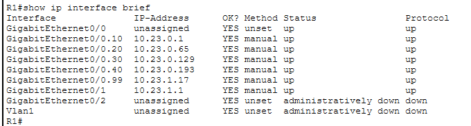
show ip interface brief: all five subinterfaces and the WAN link up/up at their planned addresses.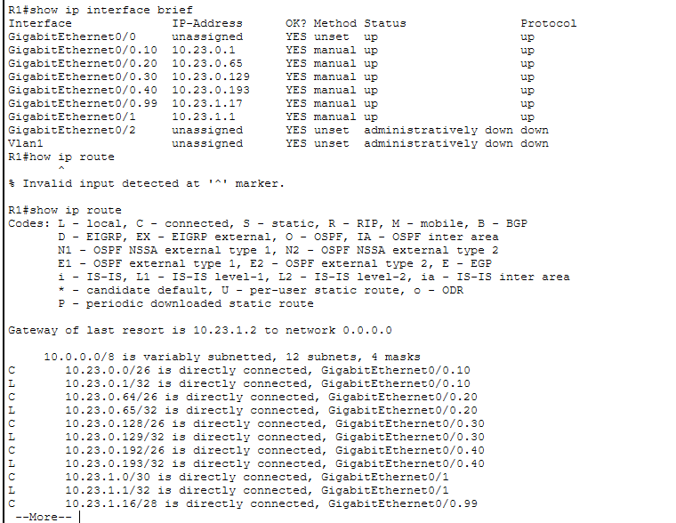
show ip route: connected and local routes for every VLAN and the WAN, and "Gateway of last resort is 10.23.1.2". (The one "% Invalid input" line is a typo, how for show, corrected on the next line.)| Server | Address (VLAN 40) | Service |
|---|---|---|
| DHCP-SRV | 10.23.0.194/26 | DHCP: pools ADMIN .10, SALES .74, WH .138 (50 leases each); server pool .200 (20) |
| DNS-SRV | 10.23.0.195/26 | DNS: files.tshimo.test → 10.23.0.196 |
| FILE-SRV | 10.23.0.196/26 | HTTP and FTP |
A PC's DHCP request is a broadcast that never leaves its own VLAN. R1's ip helper-address 10.23.0.194 on each user subinterface forwards it to DHCP-SRV as unicast, stamped with the subinterface's gateway address; the server uses that address to choose the matching pool. Each pool starts nine addresses above its gateway, which keeps .1–.9 of every /26 free for infrastructure. All 40 PCs were set to DHCP and each department's first lease was checked. Sales and Warehouse are shown below; Admin's lease (ADMIN-PC-01 received 10.23.0.10/26, gateway .1) is in the repository as screenshots/06a-admin-dhcp.png.
10.23.0.74/26, gateway .65, DHCP .194, DNS .195.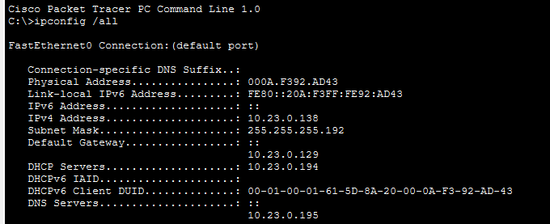
10.23.0.138/26, gateway .129, DHCP .194, DNS .195.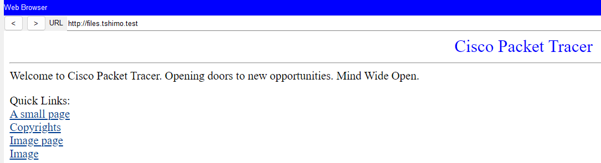
http://files.tshimo.test: DNS-SRV resolves the name and FILE-SRV serves the page.Every test was run live in Packet Tracer against the configured network. "Observed" is recorded only from what the simulation showed.
| ID | Test | Observed | Result | Fig. |
|---|---|---|---|---|
| PHY-01 | Topology and cabling | 7 network devices, 43 end devices, 49 links; crossover on like-device links | PASS | 2 |
| L2-00 | SW-CORE show cdp neighbors | Fa0/1–Fa0/4 → SW-ADM, SW-SAL, SW-WH, SW-SRV as planned | PASS | repo |
| L2-01 | SW-WH show vlan brief | VLAN 30 active on Fa0/2–Fa0/21 | PASS | 4 |
| L2-02 | SW-CORE show interfaces trunk | Trunks: 802.1Q, native 99, allowed 10,20,30,40,99 | PASS | 3 |
| L3-01 | R1 show ip interface brief | 5 subinterfaces + Gi0/1 up/up at planned addresses | PASS | 5 |
| L3-02 | R1 show ip route | All VLAN and WAN routes connected; default via 10.23.1.2 | PASS | 6 |
| DHCP-01 | One PC per user VLAN | Each took the first address of its own pool, with correct gateway and DNS | PASS | 7a, 7b, repo |
| LAN-01 | WH-PC-01 → WH-PC-02 | 4/4 replies (same VLAN) | PASS | 9 |
| ROUTE-01 | Admin and Sales → FILE-SRV | ADMIN-PC-01 3/4 (first lost to ARP), SALES-PC-01 4/4 | PASS | 11 |
| DNS-01 | Browser → files.tshimo.test | Name resolved, page loaded | PASS | 8 |
| NAT-01 | PC → 203.0.113.1 | SALES-PC-03 4/4, 0% loss | PASS | 10 |
| CR1-01 | Warehouse capacity | 20 ports in VLAN 30; no subnet, gateway or trunk change | PASS | 4 |
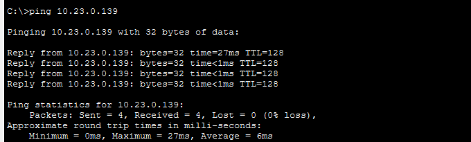
10.23.0.139), same VLAN: 4/4.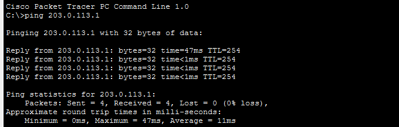
203.0.113.1 (ISP loopback) through NAT: 4/4, 0% loss.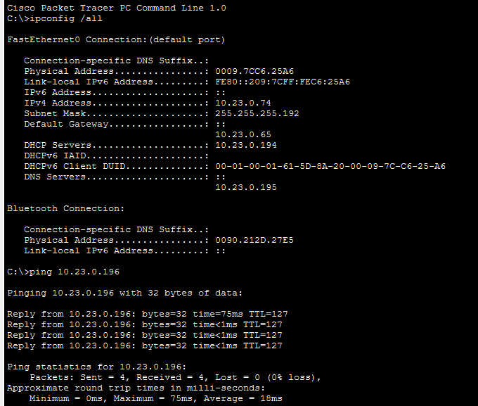
10.23.0.74) → FILE-SRV (VLAN 40, 10.23.0.196): 4/4. TTL 127 instead of 128 shows the packet crossed one router hop (R1).show ip nat translations was run about six minutes after the NAT ping and returned empty, because dynamic PAT entries expire when idle. The successful ping in Figure 10 is the proof (an untranslated 10.23.0.x source could not get a reply from the ISP), but the better practice is to run the table check immediately after the ping.A change on the core switch removes VLAN 30 (Warehouse) from the allowed-VLAN list on the SW-CORE → SW-WH trunk. It is a realistic one-word mistake: typing switchport trunk allowed vlan 10,20,40,99 instead of …10,20,30,40,99, or running remove 30 on the wrong port.
Why it qualifies as Advanced:
Work up the OSI model and move up a layer only once the one below is proven good. Use a control test from an unaffected department to scope the fault before touching any device. Treat expected symptoms as hypotheses to check, not conclusions.
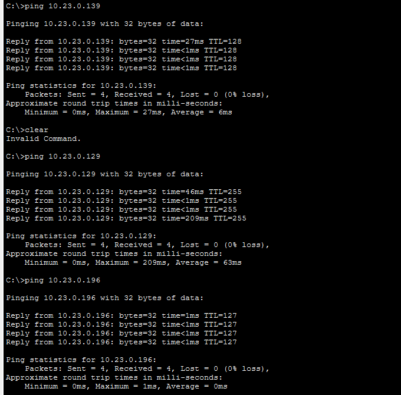
10.23.0.138) reaches WH-PC-02 (.139), its gateway (.129) and FILE-SRV (.196): all 4/4. The Packet Tracer file was saved at this point.| Test | Expected (hypothesis) | Observed |
|---|---|---|
WH-PC-01 → gateway .129 | Fail: the path to R1 crosses the trunk | 100% loss |
WH-PC-01 → FILE-SRV .196 | Fail: another VLAN, needs R1 | 100% loss |
WH-PC-01 → WH-PC-02 .139 | Work: same switch, same VLAN, no trunk needed | 4/4 |
| ADMIN-PC-01 → FILE-SRV (control) | Work: Admin uses Fa0/1, not Fa0/3 | 4/4 |
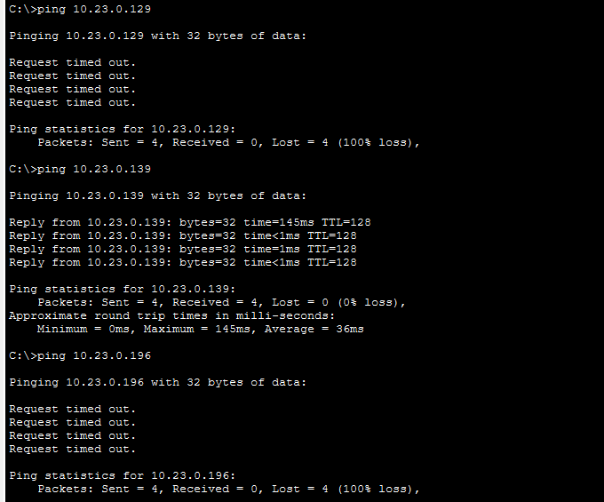
.129) and file server (.196) fail; WH-PC-02 (.139) still answers.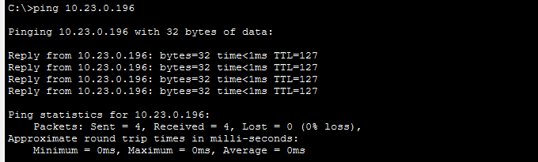
| Layer | Evidence | Conclusion |
|---|---|---|
| Scope | Admin works; Warehouse PCs reach each other | The servers and SW-WH's access ports are fine. The problem is on the path between SW-WH and R1. |
| 1 — Physical | Link lights up; WH-PC-01 ↔ WH-PC-02 works | Cables and ports are fine. |
| 3 — Network | WH-PC-01 still holds its lease 10.23.0.138/26, gateway .129; R1's Gi0/0.30 was up/up (Figure 5) | Not a host addressing or gateway-configuration fault. (R1's subinterface was not re-checked during the fault; the fix on SW-CORE alone restoring service confirms R1 was never the cause.) |
| 2 — Data link | SW-CORE show interfaces trunk (Figure 15) | All five trunk ports up, native 99. Fa0/3's allowed list reads 10,20,40,99; every other port reads 10,20,30,40,99. Fault found. |
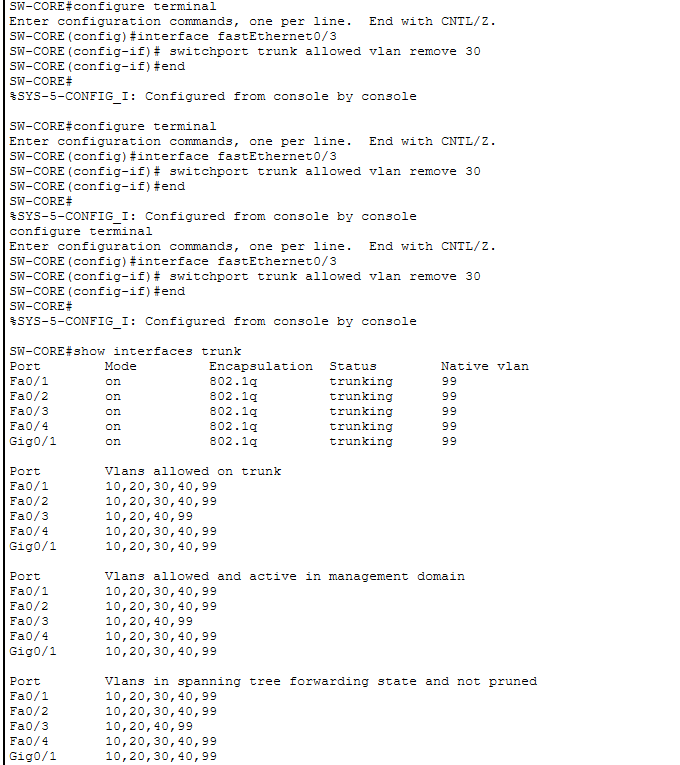
show interfaces trunk. Fa0/3 alone is missing VLAN 30 across the allowed, active and forwarding lists. Gi0/1 to R1 is trunking normally.add 30 restores exactly the one VLAN that was removed, without retyping, and so without risking, the rest of the list.
| Check | Expected | Observed |
|---|---|---|
SW-CORE show interfaces trunk | Fa0/3 allows 10,20,30,40,99, as the others | PASS Fa0/3 back to 10,20,30,40,99 |
WH-PC-01 → gateway .129 | Replies | 4/4 |
WH-PC-01 → FILE-SRV .196 | Replies | 4/4 |
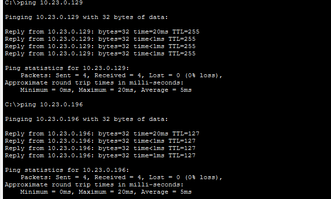
.129) and FILE-SRV (.196) again, 4/4 each, 0% loss..pkt was saved after the fix, with write memory run on SW-CORE, so it contains the healthy network, not the faulted one.Only the VLAN-pruning fault was injected and tested. The table below is analysis of how the same scoped, layer-by-layer method separates other plausible faults in this network. It is reasoning, not observed results. It shows why the control test and the choice of first command matter: several of these produce a symptom close to the one demonstrated.
| Fault | Symptom pattern | First discriminating check | Confirms with |
|---|---|---|---|
| VLAN pruned from trunk (done) | One VLAN loses its gateway and other VLANs; local switching works; other VLANs fine | Control test from another department | show interfaces trunk on both ends: one allowed list differs |
| Native VLAN mismatch | Console logs NATIVE_VLAN_MISMATCH; STP may block the VLAN on that port; management traffic on the trunk fails | Read the syslog messages | show interfaces trunk: native VLAN differs between the two ends. (Seen transiently in this build, Section 7) |
| R1 subinterface down or wrong encapsulation | One VLAN cannot reach its gateway; trunks look fine; same visible symptom as the assigned fault | show ip interface brief on R1 | Subinterface down, or show running-config shows the wrong dot1Q tag or mask. Distinguished from the assigned fault by the trunk check passing |
| Access port in the wrong VLAN | One PC takes an address from the wrong pool, or cannot reach its own department | ipconfig against the expected pool | show vlan brief or show interfaces fa0/x switchport |
| Wrong subnet mask on a host | Reaches some local addresses but not others; off-subnet traffic fails | ipconfig: compare mask with the pool | Correct the static setting or pool mask |
| Missing default route on R1 | All internal traffic fine; only external traffic fails; tracert stops at R1 | show ip route: no "Gateway of last resort" | Restore ip route 0.0.0.0 0.0.0.0 10.23.1.2 |
| DHCP relay missing or scope exhausted | New or renewing PCs get no valid lease; hosts with static or existing addresses are fine | ipconfig shows no lease from the pool | R1 show running-config for ip helper-address; DHCP-SRV pool and lease count |
| Item | Before CR1 | After CR1 (as built) | Changed? |
|---|---|---|---|
| Warehouse staff / PCs | 12 | 20 (WH-PC-01…20) | Yes — endpoints only |
| SW-WH access ports in VLAN 30 | Fa0/2–Fa0/13 | Fa0/2–Fa0/21 | Yes — port range only |
| VLAN 30 subnet | 10.23.0.128/26 | 10.23.0.128/26 | No |
| Gateway / R1 subinterface | 10.23.0.129, Gi0/0.30 | 10.23.0.129, Gi0/0.30 | No |
| Trunks, routing, NAT | — | — | No |
| DHCP WH-POOL | 50 leases | 50 leases (20 used) | No |
"No redesign" is defined here as no change to any VLAN boundary, subnet mask, gateway, routing or trunk configuration. CR1 meets that: it is purely a cabling and switch-port assignment change, which is the point of provisioning uniform /26s and 24-port switches up front. Figure 4 shows the 20 Warehouse ports live in VLAN 30.
The brief says only that a branch may open within 18 months, with no headcount or structure. So the branch is delivered as a design that proves the reservation works, not as a build. It is a proposal: the branch's real requirements would be confirmed with the client first, and none of it has been configured or tested in Packet Tracer. The idea: the branch mirrors HQ's layout shifted by +128 in the third octet.
| Purpose | HQ (built) | Branch (proposed) |
|---|---|---|
| VLAN 10 / 20 / 30 / 40 blocks | 10.23.0.0 / .64 / .128 / .192 (/26) | 10.23.128.0 / .64 / .128 / .192 (/26) |
| VLAN 99 management / native | 10.23.1.16/28 | 10.23.129.16/28 |
| Site summary route | 10.23.0.0/23 | 10.23.128.0/23 |
| Inter-site link (/30) | 10.23.1.4/30 — R1 .5, branch router .6; inside HQ's existing /23 summary | |
ip route 10.23.128.0 255.255.254.0 10.23.1.6; at the branch, a default route to 10.23.1.5. A routing protocol is not justified at this scale.access-list 1 permit 10.23.128.0 0.0.1.255) if the branch is to reach the internet through HQ. What does not change: every HQ VLAN, subnet, gateway, trunk, DHCP pool and switch. The NAT line is a real, small HQ change, and it is stated here rather than hidden.10.23.128.0/17 holds 64 blocks of /23, each as large as HQ's whole footprint, so further sites need no HQ change either.The full proposal, with a verification plan for when the branch is built, is in docs/11-branch-office-design-proposal.md.
The real problems hit during implementation, recorded as they happened rather than tidied away.
| Issue | How it was detected | Resolution | What it shows |
|---|---|---|---|
| Core port plan used Gi0/2–Gi0/5 on SW-CORE | Checking the plan against the 2960-24TT's actual ports before building: it has only two Gigabit ports | Access uplinks moved to Fa0/1–Fa0/4; R1 kept Gi0/1 | A port-only change; the VLAN and addressing design was untouched |
| Like-device links cabled straight-through | Reviewing the build against the rubric's "correct cabling" criterion | ISP–R1 and the four SW-CORE uplinks recabled as crossover; baseline resaved | Correct cabling should not depend on Auto-MDIX |
| Native-VLAN-mismatch and spanning-tree "inconsistent VLAN" messages | Console logs on SW-CORE while the switches were configured one at a time | None needed: each cleared once both ends of the trunk had native VLAN 99 | A trunk's two ends must agree on the native VLAN |
| Empty NAT translation table | show ip nat translations run minutes after a successful ping | None needed: PAT entries time out when idle; the ping is the proof | Check translations immediately after generating traffic |
| Wrong config pasted onto the core switch during the fault demo | The Admin control test failed three times in a row (25%, then 100%, then 100% loss), which contradicted the prediction that only Warehouse would fail. The core switch's prompt read SW-WH#; show cdp neighbors listed 5 neighbours, so it was physically SW-CORE. The access-port block from sw-wh.txt had turned three of its trunks (to SW-SAL, SW-WH, SW-SRV) into VLAN 30 access ports | Re-applied sw-core.txt in full, confirmed all trunks with show interfaces trunk, saved, then re-injected only the one-line fault and re-ran every symptom test | Confirming a device's identity with CDP, and refusing to accept a symptom that did not fit the design |
An honest account of what the delivered design does not do. None of these were required by the brief, but a production network would address them.
| Limitation | Consequence | What would be added |
|---|---|---|
| Single router and single core switch | R1 or SW-CORE failing takes the site down; one trunk carries all inter-VLAN traffic | A second router with HSRP/VRRP, a redundant core, or an EtherChannel to the router |
| No inter-VLAN access control | Any VLAN can reach any other, including Servers; the assigned fault shows how much depends on a few lines of configuration | ACLs on R1's subinterfaces, e.g. restricting access to the file server by department |
| No Layer 2 port security or DHCP snooping | A rogue device or DHCP server on an access port would not be stopped | Port security, DHCP snooping and dynamic ARP inspection on the access switches |
| Dependence on one DHCP server | If DHCP-SRV is down, new and renewing clients get no lease | A second DHCP server or a failover pair; shorter dependency chain via router-hosted pools as backup |
| Management over SVIs, no secure remote access | No SSH, no banner, no password policy was configured in the lab | SSH with local or AAA accounts, enable secret, console and VTY hardening, and a management ACL |
| Guest Wi-Fi reserved, not built | The 10.23.1.32/28 block exists on paper only | A guest VLAN, wireless controller or access point, and an ACL isolating it from internal VLANs |
| Branch office designed, not built | Section 6.2 is a proposal; no branch behaviour was simulated | Build and test it once the client confirms the branch's requirements |
| Simulation limits | Packet Tracer cannot show real performance, failover timing or hardware behaviour; results show correctness, not capacity | Validate on real equipment before deployment |
Designing the addressing before touching Packet Tracer paid off twice. Making every department a uniform /26 meant Change Request 1 was a cabling exercise rather than a redesign, and reserving the top half of the /16 meant the branch-office constraint cost nothing at HQ. Writing each device's configuration as a reviewable file first, applying one device at a time and checking with a show command before moving on, kept the build understandable: when something looked wrong, the list of things that could have changed was short.
Three mistakes were the most useful part of the project. First, the original core port plan assumed five Gigabit ports that a 2960-24TT does not have; the lesson was to check a plan against the real device before building, not after. Second, I first cabled the like-device links straight-through; Packet Tracer would have accepted them, but checking the work against the "correct cabling" criterion showed that "it works" and "it is right" are different standards. Third, and most important, during the fault demonstration I pasted the Warehouse switch's configuration onto the core switch. The symptom did not match my prediction, because the Admin control test failed too. The easy path was to record that as a result. Instead I treated the mismatch as a second, unknown problem, found the core switch's prompt reading SW-WH#, confirmed with CDP that it was physically the core switch, restored it, and re-ran the demonstration cleanly. The early failures were at first put down to spanning tree reconverging; that explanation was wrong, and it was corrected once the real cause was clear. That episode taught me more about troubleshooting than the planned fault did: a control test is only valuable if you are willing to believe it when it contradicts you.
The VLAN-pruning fault is hard because nothing looks broken. The link is up, the switch ports are green, local traffic works, and the person reporting it will say "the Warehouse network is down". Scoping first (what works, what does not, and for whom) removed most of the network from suspicion before I ran a single diagnostic command, and one comparison, the allowed list on four ports side by side, found the cause. Writing the fault catalogue in Section 5.9 also showed me that several different faults produce nearly the same symptom, so the first check has to be the one that tells them apart, not the one that is easiest.
show ip nat translations immediately after the NAT ping, and capture a standalone Warehouse inter-VLAN ping as its own test.show ip interface brief on R1 to show that R1's Warehouse subinterface is up and rule it out directly rather than by inference.show running-config | include hostname, before pasting any configuration, so the wrong-device mistake is impossible rather than merely caught.Repository: tshimo-agri-network — https://github.com/MALULEKE-KS/tshimo-agri-network
| Date | Commit |
|---|---|
| 28 Aug 2026 | Add Milestone 1 design package: requirements, topology, addressing plan |
| 28 Aug 2026 | Rename repository references to tshimo-agri-network, add eFundi submission text |
| 28 Aug 2026 | Restructure repo into docs/submissions layout, rebuild topology diagrams |
| 28 Aug 2026 | Rework design language, enlarge topology diagrams, tighten copy |
| 28 Aug 2026 | Ignore local session config file |
| 28 Aug 2026 | Add signing date to Milestone 1 declaration page |
| 2 Oct 2026 | Add Milestone 2 execution map and Packet Tracer build walkthrough |
| 2 Oct 2026 | Draft IOS configurations for switches, R1 and ISP, plus server setup |
| 2 Oct 2026 | Add baseline Packet Tracer topology and physical build evidence |
| 2 Oct 2026 | Milestone 2 implementation, testing and fault-isolation evidence |
The Final-stage commits (this report, the Final package, the branch-office proposal, the video script and the README update) follow in the repository history on GitHub.
I declare that this report, the network it describes and its accompanying documentation are my own work, produced for CMPG 325 at North-West University, Mahikeng campus, in accordance with the NWU AI Policy. I built and configured the network in Cisco Packet Tracer, ran every test and captured every screenshot shown in this document, and I understand and can defend every design decision, configuration and troubleshooting step described here.
The exact command files pasted into each device's CLI, reproduced from configs/. Lines starting with ! are comments that IOS ignores. Server and PC settings are made in Packet Tracer's GUI and are given in Section 3.4 and in configs/servers.md.
! ============================================================ ! SW-CORE — Tshimo Agri Supplies HQ — Layer 2 distribution switch ! Cisco 2960-24TT ! Role: trunks R1 (Gi0/1) down to the four access switches (Fa0/1-4). ! Holds the full VLAN database since every VLAN passes through here. ! Paste this block into SW-CORE's CLI after Gate B (physical build) passes. ! ============================================================ enable configure terminal hostname SW-CORE no ip domain-lookup ! --- VLAN database --- vlan 10 name ADMIN vlan 20 name SALES vlan 30 name WAREHOUSE vlan 40 name SERVERS vlan 99 name MGMT-NATIVE exit ! --- Uplink to R1 (802.1Q trunk, native VLAN 99) --- interface gigabitEthernet0/1 description Uplink to R1 Gi0/0 switchport mode trunk switchport trunk native vlan 99 switchport trunk allowed vlan 10,20,30,40,99 no shutdown exit ! --- Trunks to the four access switches --- interface range fastEthernet0/1 - 4 switchport mode trunk switchport trunk native vlan 99 switchport trunk allowed vlan 10,20,30,40,99 no shutdown exit interface fastEthernet0/1 description Trunk to SW-ADM Fa0/1 exit interface fastEthernet0/2 description Trunk to SW-SAL Fa0/1 exit interface fastEthernet0/3 description Trunk to SW-WH Fa0/1 exit interface fastEthernet0/4 description Trunk to SW-SRV Fa0/1 exit ! --- Management SVI on the native VLAN --- interface vlan 99 ip address 10.23.1.18 255.255.255.240 no shutdown exit ip default-gateway 10.23.1.17 end write memory ! ------------------------------------------------------------ ! If Packet Tracer's 2960 rejects "switchport mode trunk" with an ! encapsulation error, add this line before it on each trunk interface: ! switchport trunk encapsulation dot1q ! (Not expected on a real 2960-24TT — it's 802.1Q-only — but PT model ! behaviour can vary; report the exact error if you see one.) ! ------------------------------------------------------------ ! Verify with: ! show vlan brief ! show interfaces trunk ! show ip interface brief
! ============================================================ ! SW-ADM — Tshimo Agri Supplies HQ — Admin access switch ! Cisco 2960-24TT ! Role: 8 Admin PCs on VLAN 10, trunked back to SW-CORE Fa0/1. ! Paste this block into SW-ADM's CLI after Gate B (physical build) passes. ! ============================================================ enable configure terminal hostname SW-ADM no ip domain-lookup ! --- VLANs used locally (full DB lives on SW-CORE) --- vlan 10 name ADMIN vlan 99 name MGMT-NATIVE exit ! --- Uplink to SW-CORE (802.1Q trunk, native VLAN 99) --- interface fastEthernet0/1 description Uplink to SW-CORE Fa0/1 switchport mode trunk switchport trunk native vlan 99 switchport trunk allowed vlan 10,20,30,40,99 no shutdown exit ! --- Access ports: 8 Admin PCs --- interface range fastEthernet0/2 - 9 switchport mode access switchport access vlan 10 spanning-tree portfast no shutdown exit ! --- Management SVI on the native VLAN --- interface vlan 99 ip address 10.23.1.19 255.255.255.240 no shutdown exit ip default-gateway 10.23.1.17 end write memory ! Verify with: ! show vlan brief ! show interfaces trunk ! show ip interface brief
! ============================================================ ! SW-SAL — Tshimo Agri Supplies HQ — Sales access switch ! Cisco 2960-24TT ! Role: 12 Sales PCs on VLAN 20, trunked back to SW-CORE Fa0/2. ! Paste this block into SW-SAL's CLI after Gate B (physical build) passes. ! ============================================================ enable configure terminal hostname SW-SAL no ip domain-lookup ! --- VLANs used locally (full DB lives on SW-CORE) --- vlan 20 name SALES vlan 99 name MGMT-NATIVE exit ! --- Uplink to SW-CORE (802.1Q trunk, native VLAN 99) --- interface fastEthernet0/1 description Uplink to SW-CORE Fa0/2 switchport mode trunk switchport trunk native vlan 99 switchport trunk allowed vlan 10,20,30,40,99 no shutdown exit ! --- Access ports: 12 Sales PCs --- interface range fastEthernet0/2 - 13 switchport mode access switchport access vlan 20 spanning-tree portfast no shutdown exit ! --- Management SVI on the native VLAN --- interface vlan 99 ip address 10.23.1.20 255.255.255.240 no shutdown exit ip default-gateway 10.23.1.17 end write memory ! Verify with: ! show vlan brief ! show interfaces trunk ! show ip interface brief
! ============================================================ ! SW-WH — Tshimo Agri Supplies HQ — Warehouse access switch ! Cisco 2960-24TT ! Role: 20 Warehouse PCs (12 existing + 8 CR1) on VLAN 30, ! trunked back to SW-CORE Fa0/3. ! Paste this block into SW-WH's CLI after Gate B (physical build) passes. ! ! NOTE: SW-CORE's Fa0/3 is the trunk port used for the assigned ! troubleshooting fault (VLAN 30 removed from its allowed list). ! This file configures the healthy baseline only — the fault is ! injected later, on SW-CORE, per troubleshooting/advanced-fault-isolation.md. ! ============================================================ enable configure terminal hostname SW-WH no ip domain-lookup ! --- VLANs used locally (full DB lives on SW-CORE) --- vlan 30 name WAREHOUSE vlan 99 name MGMT-NATIVE exit ! --- Uplink to SW-CORE (802.1Q trunk, native VLAN 99) --- interface fastEthernet0/1 description Uplink to SW-CORE Fa0/3 switchport mode trunk switchport trunk native vlan 99 switchport trunk allowed vlan 10,20,30,40,99 no shutdown exit ! --- Access ports: 20 Warehouse PCs (includes CR1 growth) --- interface range fastEthernet0/2 - 21 switchport mode access switchport access vlan 30 spanning-tree portfast no shutdown exit ! --- Management SVI on the native VLAN --- interface vlan 99 ip address 10.23.1.21 255.255.255.240 no shutdown exit ip default-gateway 10.23.1.17 end write memory ! Verify with: ! show vlan brief ! show interfaces trunk ! show ip interface brief
! ============================================================ ! SW-SRV — Tshimo Agri Supplies HQ — Server access switch ! Cisco 2960-24TT ! Role: DHCP-SRV, DNS-SRV, FILE-SRV on VLAN 40, trunked back to SW-CORE Fa0/4. ! Paste this block into SW-SRV's CLI after Gate B (physical build) passes. ! ============================================================ enable configure terminal hostname SW-SRV no ip domain-lookup ! --- VLANs used locally (full DB lives on SW-CORE) --- vlan 40 name SERVERS vlan 99 name MGMT-NATIVE exit ! --- Uplink to SW-CORE (802.1Q trunk, native VLAN 99) --- interface fastEthernet0/1 description Uplink to SW-CORE Fa0/4 switchport mode trunk switchport trunk native vlan 99 switchport trunk allowed vlan 10,20,30,40,99 no shutdown exit ! --- Access ports: DHCP-SRV, DNS-SRV, FILE-SRV --- interface range fastEthernet0/2 - 4 switchport mode access switchport access vlan 40 spanning-tree portfast no shutdown exit ! --- Management SVI on the native VLAN --- interface vlan 99 ip address 10.23.1.22 255.255.255.240 no shutdown exit ip default-gateway 10.23.1.17 end write memory ! Verify with: ! show vlan brief ! show interfaces trunk ! show ip interface brief
! ============================================================ ! R1 — Tshimo Agri Supplies HQ — edge router ! Cisco 2911 ! Role: router-on-a-stick inter-VLAN routing on Gi0/0 (trunk to SW-CORE Gi0/1), ! DHCP relay to DHCP-SRV, WAN to ISP on Gi0/1, NAT/PAT overload. ! Paste AFTER the five switch configs are in. ! ============================================================ enable configure terminal hostname R1 no ip domain-lookup ! --- Physical trunk interface: no IP, just bring it up --- interface gigabitEthernet0/0 description Trunk to SW-CORE Gi0/1 no ip address no shutdown exit ! --- One subinterface per VLAN = that VLAN's default gateway --- interface gigabitEthernet0/0.10 description VLAN 10 ADMIN gateway encapsulation dot1Q 10 ip address 10.23.0.1 255.255.255.192 ip helper-address 10.23.0.194 ip nat inside exit interface gigabitEthernet0/0.20 description VLAN 20 SALES gateway encapsulation dot1Q 20 ip address 10.23.0.65 255.255.255.192 ip helper-address 10.23.0.194 ip nat inside exit interface gigabitEthernet0/0.30 description VLAN 30 WAREHOUSE gateway encapsulation dot1Q 30 ip address 10.23.0.129 255.255.255.192 ip helper-address 10.23.0.194 ip nat inside exit interface gigabitEthernet0/0.40 description VLAN 40 SERVERS gateway encapsulation dot1Q 40 ip address 10.23.0.193 255.255.255.192 ip nat inside exit ! Native VLAN 99: untagged frames on the trunk belong here interface gigabitEthernet0/0.99 description VLAN 99 MGMT-NATIVE gateway encapsulation dot1Q 99 native ip address 10.23.1.17 255.255.255.240 exit ! --- WAN to ISP --- interface gigabitEthernet0/1 description WAN to ISP ip address 10.23.1.1 255.255.255.252 ip nat outside no shutdown exit ! --- Default route out to the ISP --- ip route 0.0.0.0 0.0.0.0 10.23.1.2 ! --- NAT/PAT: translate the business/server range (10.23.0.0/24) only. ! WAN and management (10.23.1.0/24) are deliberately excluded. --- access-list 1 permit 10.23.0.0 0.0.0.255 ip nat inside source list 1 interface gigabitEthernet0/1 overload end write memory ! Verify with: ! show ip interface brief (all subinterfaces + Gi0/1 up/up) ! show ip route (C routes for each VLAN, S* default to 10.23.1.2) ! show ip nat translations (after a PC pings 203.0.113.1)
! ============================================================ ! ISP — simulated upstream provider ! Cisco 2911 ! Role: far end of the R1 WAN /30, plus a loopback acting as an ! "internet" test target for NAT verification. ! ! ISP port facing R1 Gi0/1 is Gi0/0. Confirmed 2 Oct 2026: this file was ! applied unchanged, R1 Gi0/1 came up/up, and a PC reached 203.0.113.1 ! through NAT — impossible unless the link lands on the addressed Gi0/0. ! ============================================================ enable configure terminal hostname ISP no ip domain-lookup interface gigabitEthernet0/0 description WAN to Tshimo R1 Gi0/1 ip address 10.23.1.2 255.255.255.252 no shutdown exit ! Simulated internet host interface loopback0 description Internet test target ip address 203.0.113.1 255.255.255.255 exit end write memory ! No route back to 10.23.0.0/24 is needed: R1 NATs every inside ! host to 10.23.1.1, which the ISP already reaches directly.